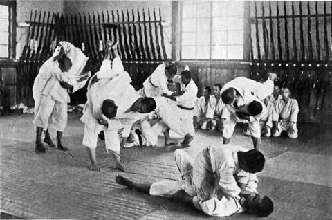
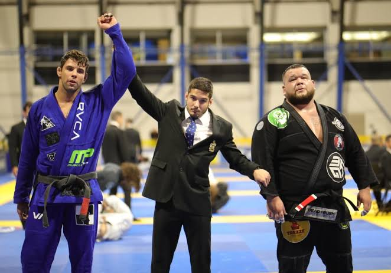
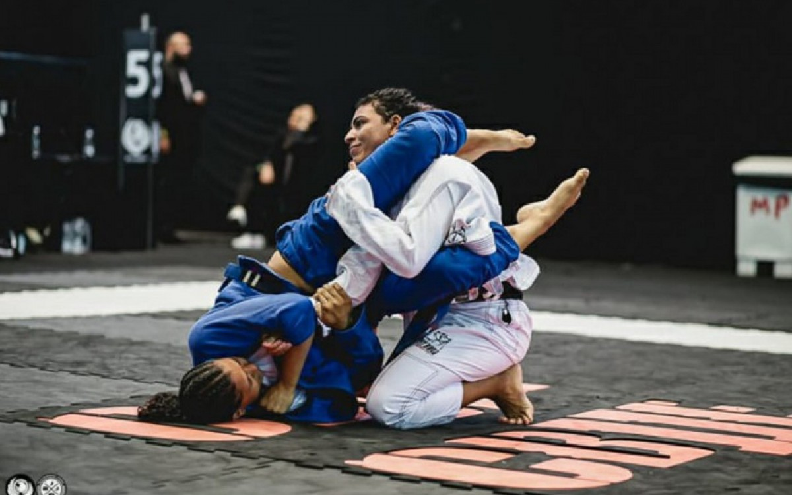
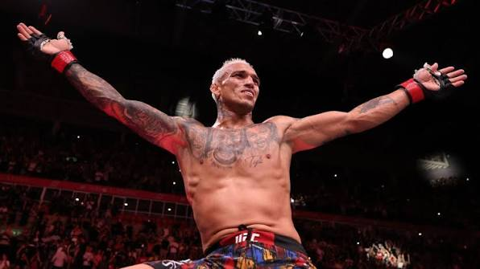

Mesmo não tendo origem brasileira, praticamente se tornou uma arte marcial brasileira
Samuel Espinosa—
São Paulo
—
A Origem da Arte Marcial
O jiu-jitsu tem sua origem no Japão como uma técnica de defesa pessoal sem armas, e usa a ideia do “ceder para vencer”, ou seja, usar a força do próprio oponente ao invés de tentar bloqueá-lo.

Origem do Jiu-Jitsu no Japão.
Mitsuyo Maeda viajou pelo mundo ensinando a arte marcial, até um dia chegar no Brasil em 1914. Aqui, conheceu a família Gracie, tornou-se amigo deles e começou a ensinar o jiu-jitsu japonês para eles.
Hélio Gracie, o irmão mais novo da família, percebeu que por ser menor e mais fraco sofria muita desvantagem em diversas posições que exigiam força. Então, desenvolveu técnicas que priorizavam alavancas e métodos de combate focados no solo, o que permitiu derrotar oponentes maiores e mais fortes.
Depois de aperfeiçoar essa arte, ela foi sendo mais conhecida no Brasil e, quando os Gracie a levaram aos Estados Unidos, entre as décadas de 1980 e 1990, virou o que conhecemos hoje como Brazilian jiu-jitsu (BJJ).
Como o Jiu-Jitsu funciona?
O Jiu-jitsu tem um nível de progressão em faixas, ou seja, conforme você vai progredindo na arte-marcial, você vai mudando a cor da faixa.

Campeonato de faixas pretas.
Elas são dividas em branca, azul, roxa, marrom e preta, onde a cada faixa você deve pegar 4 graus para poder passar para a próxima, ou seja, começa com a faixa branca, depois faixa branca 1 grau, depois faixa branca 2 graus, depois 3 graus e por último 4 graus. Após os graus, viria a faixa azul, e isso acontece com todas as outras exceto a preta.
Cada grau demora cerca de 2 a 4 meses para ser dado, isso depende do método que a academia decidiu graduar os alunos, Porém, na preta, além de ser 6 graus ao invés de 4, os 3 primeiros precisam de pelo menos 3 anos para graduação, e os 3 últimos exigem 5 anos em cada um deles. Após a faixa preta vem faixas significativas para praticantes de décadas que seriam as faixas corais (vermelha e preta/ vermelha e branca/ vermelha).
É importante ressaltar que para menores de idade, existem mais faixas, e elas mudam mais baseado na idade, pois nas normas das federações, alguém com menos de 16 anos não pode lutar de faixa azul, então a ordem ficaria: branca, cinza, amarela, laranja, verde e aí sim vem azul, e depois a ordem padrão. As faixas além de representar tempo no esporte, representa a hierarquia no esporte e também serve para separar os campeonatos entre os competidores, ou seja, azul luta com azul, roxa com roxa e assim por diante.
O Brasil no cenário
Aqui no Brasil, existem várias federações que realizam campeonatos, dentre elas, tem a IBJJF (International Brazilian Jiu-Jitsu Federation), CBJJ- (Confederação Brasileira de Jiu-Jitsu), CBJJE (Confederação Brasileira de Jiu-Jitsu Esportivo), CBJJO (Confederação Brasileira de JIu-Jitsu Olímpico) e etc.

Luta oficial da IBJJF.
Os campeonatos são divididos por categorias de peso e faixa, então alguém de 60kg não vai lutar com alguém de 100kg, assim como um faixa branca não vai lutar com um faixa marrom, porém isso muda na categoria absoluto, onde lutadores de qualquer peso podem lutar, nesses casos, competidores de 60kg e 100kg podem lutar um contra o outro.
Além disso, há as lutas casadas, onde o mestre junto com o competidor decidem um oponente para lutar e o outro oponente tem que aceitar, nesses casos, os participantes podem ser de pesos e faixas diferentes, isso depende se a luta vai ser aceita pelos dois lados. E nesses campeonatos existem milhares de competidores ativos atualmente, com a CBJJ batendo recorde chegando a quase 8000 atletas na 31° edição de 2026.
Dentre esses atletas, há vários famosos como Roger Gracie, Marcus “Buchecha”, Leandro Lo, Bruno Malfacine, João Miyao e Gabrielli Pessanha. Alguns se destacaram tanto na arte que chegaram ao UFC (Campeonato de MMA) e hoje ganham muito dinheiro com isso, como o Charles Oliveira, Royce Gracie, Fabrício Werdum, Mackenzie Dern, Demian Maia e etc.
A Importância na Vida dos Atletas
É importante dizer que o jiu-jitsu é muito além de algo feito para ensinar a lutar e ensinar força bruta, ele é uma arte marcial e assim como todas elas, ele ensina muito sobres valores mentais e saúde física e psicológica. Ele mostra a importância do autocontrole, que nem sempre vale a pena se estressar, que não vale a pena caçar briga a toa e que é sempre melhor pensar antes de agir.

Charles do Bronx comemorando vitória no UFC.
Ele ensina pensamento estratégico, pois como já dito, as técnicas prevalecem nessa arte mais do que a força, e para isso acontecer, é necessário pensar nos movimentos, estudar os adversários, treinar técnicas repetitivamente até você entender como aplicá-las com maestria. Ele ensina conceitos de amizade; para quem está vendo de fora, o cenário do jiu-jitsu pode parecer conturbado ou que as pessoas se tratam de forma desrespeitosa e agressiva e é inevitável que haja pessoas assim, mas em geral, as academias são ambientes acolhedores e que há muito respeito entre os praticantes e mestres, com formalidades como cumprimentos ao entrar no tatame e sair.
Concluindo, os ensinamentos do jiu-jitsu vão muito além de força e combate, pois ensinam também respeito, amizade, autocontrole e inteligência emocional e estratégica.